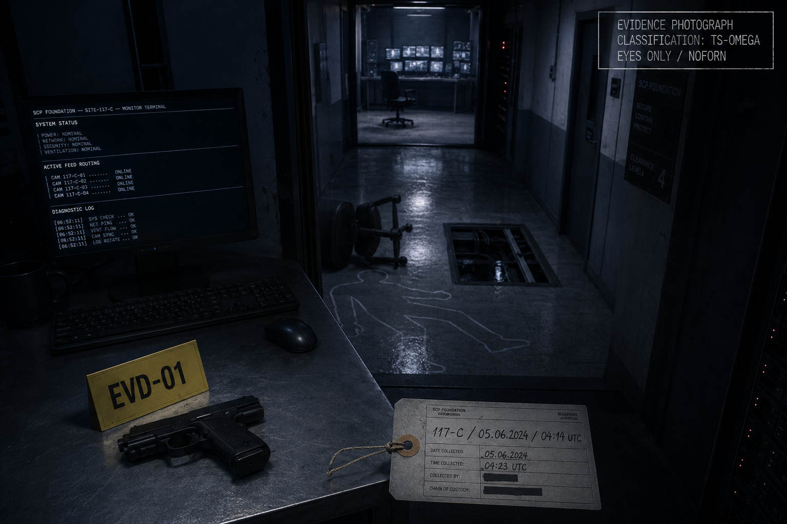

I. Сведения о сотруднице
Имя: Эва Йоханна Линдгрен
Дата рождения: 12.09.1999, Берген, Норвегия
Образование: Университет Осло, бакалавр математической
статистики (2021), магистр прикладной аналитики (2023)
В Фонде: с 01.10.2023, мл. аналитик ОНТ, Site-117
Куратор по программе подготовки:
█████████████████████ (имя в личном деле)
Семейное положение: не замужем. Близкие — мать
(Кристин Линдгрен, Берген), младшая сестра (Ингрид, Стокгольм)
Психологический профиль
Последняя плановая психологическая аттестация — 14.03.2024. Заключение: «стабильна, мотивирована, нет тревожной симптоматики, рекомендована к продвижению». Внеплановых обращений к психологу не было.
Производственная характеристика
За 8 месяцев работы — характеристика положительная. Ведущий аналитик смены Г. Хенрикссон (см. показания ниже) описывает Линдгрен как «методичную, малоразговорчивую, не подверженную панике». Конфликтов в коллективе не зафиксировано.
II. Обстоятельства смерти
05.06.2024, 04:14 UTC — Линдгрен, заступив на ночную смену в 04:00, в течение примерно 14 минут выполняла рутинные процедуры (проверка статуса сегментов сети, журнал смены). В 04:14 UTC зафиксирован одиночный выстрел из служебного пистолета, принадлежавшего дежурной СБ — пистолет был оставлен предыдущей сменой на стойке дежурного, что является грубым нарушением регламента (отдельное дисциплинарное производство, см. дело СВБ-117-2024-06-007).

Реакция СБ — в течение 90 секунд (запись с пультовой камеры пультовой охраны). Тело направлено в медблок Site-117, констатация смерти — 04:19 UTC.
Предсмертной записки нет. На столе обнаружены: служебный бейдж в держателе, личный жетон, наушники (с подключённым проигрывателем, состояние — «пауза», 00:00:00 на индикаторе).
III. Видеозаписи
Видеозапись отдела мониторинга в момент события — отсутствует. Согласно официальному журналу обслуживания, в 04:00–04:30 UTC проводилось «плановое техническое обслуживание» системы наблюдения. В журнале плановых работ техобслуживание на эту дату не значилось.
Кроме того, утрачены записи коридора 117-C за период 02:11 — 06:54 UTC предыдущей ночи (04.06.2024) — периода компрометации архива (см. отчёт CYBSEC-117-2024-06-04). Восстановленный фрагмент — см. расшифровку видеоматериала.
Связь между утраченными записями и событиями 05.06 — возможная. Установить, причинно-следственная или совпадение, в рамках данного дела невозможно.
IV. Опросы сотрудников
Г. Хенрикссон, вед. аналитик смены
«Эва была странной только последние сутки. Не подавленной — отсутствующей. Я её спросил, как дела, она ответила нормально. Но она ответила через две секунды. Это много. Раньше отвечала сразу. Я списал на усталость. Зря.»
Показания даны под протокол 06.06.2024. На уточняющий вопрос о смене 04.06.2024 (период компрометации архива) Хенрикссон сообщил, что «вспомнить начало смены не может — будто пропустил пятнадцать минут». Аналогичные показания дали четверо других операторов смены.
Р. Сальми, дежурный СБ (на момент происшествия)
«Я слышал выстрел и сразу побежал. Дверь была не заперта. Эва сидела в кресле, голова откинута. Пистолет на столе, не в руке. Это было странно, но я тогда не подумал об этом.»
Положение оружия (на столе, рукоятью к телу) зафиксировано в фотопротоколе. Стрелковая экспертиза по биомеханике — не противоречит самоубийству, но и не исключает иных версий.
М. Линдгрен (мать покойной)
Опрошена дистанционно, под прикрытием как «сотрудник кадровой службы». В личной беседе сообщила: за неделю до события дочь звонила, говорила о работе уклончиво (что соответствует протоколу). Просила «передать Ингрид, что я её люблю и пусть не сердится за тот разговор». М. Линдгрен расценила фразу как обычную сестринскую переписку. Сестра Ингрид показывает, что «никакого разговора, на который Эва могла бы ссылаться, не было».
V. Заключение следствия
Установленное:
- Смерть наступила в результате одиночного огнестрельного ранения в голову, нанесённого служебным пистолетом, доступ к которому был возможен в результате нарушения регламента предыдущей смены.
- Предсмертной записки нет. Следов борьбы, посторонних лиц на месте — не зафиксировано.
- Между событием и компрометацией архива 04.06.2024 имеется временная и пространственная корреляция: Линдгрен была среди шести операторов смены, в первые ~15 минут которой произошла компрометация. Все шесть операторов сообщают о невозможности восстановить хронологию этих минут.
- Прямой причинной связи установить невозможно.
Квалификация: самоубийство по неустановленной причине. Дело закрыто 28.06.2024 с пометкой «причина не установлена». Материалы переданы в архив СВБ.
— следователь: сл. СВБ Х. Тойвонен
— заверил: рук. СВБ Site-117
— приобщил к делу: сл. Н. Кросс, ОВР
— статус: архив · LVL 3+ · дело закрыто